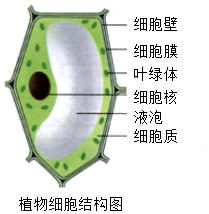
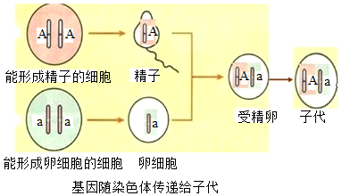

2017年北京市海淀区中考生物试题 · 选择题 第31、32、33、34、35题 · 对应解析
31. 下列各组结构与功能的对应关系不合理的是（ ）
A. 细胞核----遗传信息库B. 叶绿体----光合作用的场所
C. 液泡----呼吸作用的场所D. 细胞壁----支持和保护作用
【答案】C
【解析】
【分析】植物细胞的结构如下：

。【详解】细胞核是细胞的控制中心，控制着生物的发育和遗传，A正确；叶绿体是植物进行光合作用的场所，把光能转变成化学能储存在合成的有机物里，B正确；线粒体是进行呼吸作用的场所，液泡内的细胞液中溶解着多种物质，C错误；细胞壁的功能是保护和支持细胞的作用，维持细胞的正常形态，D正确。故选C。
【点睛】掌握植物细胞的结构和各部分的功能是解题的关键。
32. 下列关于人体心脏的叙述，不正确的是（ ）
A. 构成心脏的组织主要是肌肉组织
B. 心脏内有四个腔，左右两部分不相通
C. 由心脏输送出去的血液都是动脉血
D. 一次心脏跳动包括心脏的收缩和舒张
【答案】C
【解析】
【分析】心脏主要由心肌构成。它有4个空腔，按照位置关系，这4个腔分别叫作左心房、左心室、右心房、右心室。心房在上，心室在下，而且左心房只和左心室相通，右心房只和右心室相通，左右心房和左右心室之间都是不相通的。
【详解】心脏是血液循环的动力器官，主要由肌肉组织构成，A正确。据分析可见：心脏的四个腔中，上下的腔都是相通的，左右是不相通的，B正确。动脉血含氧丰富，因而颜色鲜红；而静脉血含氧量少，颜色变得暗红。离开右心室的肺动脉里的血液是静脉血，回到左心房的肺静脉里的血液都是动脉血，C错误。心脏总是在有规律的收缩和舒张，心脏收缩和舒张一次，我们就感到一次心跳。心率指的是心脏一分钟跳动的次数，正常成年人的心率指的是60～100次每分，D正确。
【点睛】解答此类题目的关键是熟心脏的结构特点。
33. 亲代的许多性状能在子代身上体现，主要原因是（ ）
A. 亲代把性状传递给子代
B. 亲代把控制性状的基因传递给子代
C. 子代与亲代生活在一起，长相就会相像
D. 亲代把细胞核中所有基因传递给子代
【答案】B
【解析】
【分析】生物的性状由基因控制，基因有规律地集中在细胞核内的染色体上，每一种生物细胞核内染色体的形态和数目都是一定的，如人的体细胞中含有23对染色体；在生物的体细胞中，染色体是成对存在的，基因也是成对存在的，分别位于成对的染色体上。在形成生殖细胞的过程中，成对的染色体分开，每对染色体中的一条进入精子或卵细胞中，因此生殖细胞中的染色体数比体细胞中的少一半，在形成受精卵的过程中，染色体又恢复到体细胞的数目。
【详解】生物体的各种性状都是由基因控制的，性状的遗传实质上是亲代通过生殖细胞把基因传递给了子代，在有性生殖过程中，精子与卵细胞就是基因在亲子代间传递的桥梁。如图：

因此，亲代的许多性状之所以在子代身上体现，原因是亲代把控制性状的基因传递给子代。故选：B。
【点睛】性状的遗传实质上是控制性状的基因的遗传。
34. 2002年，我国自主完成的首批成年体细胞克隆牛在山东省曹县五里墩降生．用同一只成年奶牛的体细胞克隆出来的5只小牛，它们几乎一模一样，这是因为（ ）
A. 它们的生活条件相同B. 它们的毛色和花纹相同
C. 它们的遗传物质相同D. 它们的细胞结构相同
【答案】C
【解析】
【分析】（1）“克隆”的含义是无性繁殖，即由同一个祖先细胞分裂繁殖而形成的纯细胞系，该细胞系中每个细胞的基因彼此相同。
（2）细胞核是细胞的代谢和遗传控制中心，在细胞的代谢、生长、分化中起着重要作用，是遗传物质的主要存在部位。因此在克隆的过程中，谁提供了细胞核，克隆出来的生物就像谁。
【详解】用同一只成年奶牛的体细胞克隆出来的5只小牛，它们几乎一模一样，这是因为它们的遗传物质相同。
【点睛】解答此类题目的关键是理解掌握克隆技术的特点以及克隆的过程。
35. 如图为豌豆杂交实验的遗传图解．下列叙述不正确的是（ ）

A. 豌豆的紫花和白花是一对相对性状
B. 花的紫色对于白色是显性性状
C. 子一代细胞中有来自双亲的基因
D. 子一代形成子二代过程中需要人工授粉
【答案】D
【解析】
【分析】（1）生物体的性状是由一对基因控制的，当控制某种性状的一对基因都是显性或一个是显性、一个是隐性时，生物体表现出显性基因控制的性状；当控制某种性状的基因都是隐性时，隐性基因控制的性状才会表现出来。
（2）在一对相对性状的遗传过程中，子代个体中出现了亲代没有的性状，新出现的性状一定是隐性性状，亲代的基因组成是杂合体。
【详解】豌豆的紫花和白花是一对相对性状，A正确；花的紫色对于白色是显性性状，B正确；子一代细胞中有来自双亲的基因，C正确；子一代形成子二代过程中需要自花传粉，D错误。
【点睛】解答此类题目的关键是理解掌握基因的显性与隐性以及会借助遗传图解分析解答此类问题。